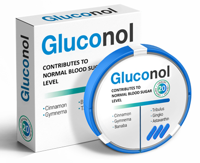

Д-р Канинг описва себе си като бивш диабетик и ни уверява, че състоянието на компенсация изобщо не е пределът на нашите мечти. За да научим повече, проведохме интервю с известния специалист.
Здравейте, Д-р Канинг. Не разполагаме с толкова много време, колкото ни се иска, затова нека да започнем с най-важното. Можете ли да ни разкажете как точно лекувате диабета?
Най-важното при диабета е да се възстанови здравето на сърдечносъдовата система.
Човешкото тяло разполага със защитна система, която при спешни случаи ограничава подхранването на определени органи. Ключовите системи, от друга страна, винаги са снабдени с глюкоза, те не се нуждаят от инсулин. С други думи, диабет тип 2 първоначално засяга само инсулинозависими органи, като черния дроб или мастната тъкан.
Повишената концентрация на глюкоза и неусвоеният инсулин обаче оказват влияние върху кръвоносните съдове и капилярите. Когато притокът на кръв е затруднен, най-важните органи спират да получават храна. Затова първото нещо, което трябва да направите, за да избегнете тежки последици, е да изчистите стените на кръвоносните съдове.
Редовното пречистване на организма е пътят към пълноценен и щастлив живот, убеден съм в това.
Значи Вие смятате, че за да се преборим с диабета, първо трябва да възстановим състоянието на кръвоносните съдове, а не панкреаса?
Точно така. Ако безразсъдно стимулирате производството на инсулин, това ще се отрази още повече на състава на кръвта ви. Просто променяте хормоналния баланс и увеличавате натоварването върху черния дроб и бъбреците.
Представете си стар тръбопровод. Дори и да пуснете най-чистата вода през него, накрая ще получите мръсна оранжева кал, защото тръбите са пълни с ръжда. Много по-разумно е първо да ги поправим, преди да мислим какво ще тече през тях.

И какво точно замърсява нашия тръбопровод?
Мога да предположа какъв отговор очаквате. Разбира се, нездравословната храна и липсата на режим се отразяват негативно на здравето. Но не си мислете, че всички диабетици са закоравели любители на бургерите и сладкото. Основният фактор за развитието на тези заболявания е напредването на възрастта.
Но тя може да бъде преодоляна чрез навременни мерки. Аз си провеждам редовен курс на пречистване и се чувствам чудесно. Планирам да доживея до сто години и не искам да спирам дотук. Аз също страдах от диабет тип 2 и дори за известно време спрях да преподавам и да приемам пациенти заради болестта. Но това беше преди 20 години. Сега вече нямам никакви симптоми, нивото на захарта ми е стабилно, не се повишава над 7 mmol.
За какви симптоми говорите?
Умора на първо място.
Сънливостта, разсеяността и влошаването на паметта наистина ме засегнаха силно. По-скоро психически, разбира се. В това състояние дори една лекция беше подвиг за мен, така че трябваше да се оттегля.
Жаждата и честото желание за уриниране също повлияха на качеството ми на живот. Нямате представа колко време и енергия се изразходва за такива прости неща. Това е като будилник, който звъни на всеки пет минути и прекъсва всяка ваша дейност, включително и съня.
Непрекъснато изпитвах глад дни наред, а традиционната диабетна диета силно ограничаваше хранителния ми режим. В резултат на това загубих удоволствието от храненето.
Изтръпването на крайниците ме плашеше най-много. Неведнъж бях виждал пациенти с язви, т.нар. диабетно стъпало, и по свой начин бях свикнал с това зрелище. Но беше страшно да преживея развоя на болестта, когато знам точно до какво води тя.
Към какво точно води диабета?
Основни усложнения на диабета са:
- Диабетно стъпало
Започва с усещане за изтръпване на долните крайници, последвано от намаляване на чувствителността - нервните окончания отмират. След това се развива гангрена, която често води до ампутация.
- Ретинопатия
Капилярите на окото се разрушават и се появява кървене. При тежки случаи ретината се отделя и пациентът губи зрението си завинаги.
- Тромбоза
Диабетът увеличава вероятността от инфаркт и инсулт от 2 до 3 пъти в зависимост от стадия на болестта. Това е смъртоносно и рискът се увеличава с напредване на възрастта.
- Нефропатия
Бъбречната недостатъчност се развива при 7 от 10 пациенти с диабет.
- Чернодробни аномалии
Диабетът води до широк спектър от проблеми: мастна чернодробна болест, цироза и дори рак. Механизмът е същият като при чернодробните заболявания: ефективността на филтрацията намалява и чернодробните клетки се заместват със съединителна тъкан.
- Кома
Черният дроб се опитва да компенсира проблемите с метаболизма на въглехидратите с кетонни тела - специални вещества, които активно разграждат мазнините, за да получат енергия отнякъде. И тъй като черният дроб и бъбреците вече са в лошо състояние, кетонните тела не се усвояват и предизвикват интоксикация. В резултат на това нервната система отказва.
И как да се справим с тази опасност?
Най-добре е изобщо да не довеждате организма си до това състояние. Навременното лечение превръща диабета от смъртоносна опасност във временно затруднение, неприятно, но управляемо.
Преди около 20 години, когато методът ми беше по-скоро експериментален, отколкото общоприет, трябваше сам да намирам и събирам билки, да поръчвам редки съставки от чужбина и да приготвям най-различни отвари. Но сега прочистването на кръвоносните съдове се е превърнало в широко разпространена практика.
Въз основа на моите проучвания (всъщност не само на моите, разбира се) беше създаден балансиран състав. Продуктът е с високо качество и ниска цена и наскоро беше пуснат на международния пазар, включително на българския.
За кое средство говорите?
Става въпрос за , разбира се. Това е средство на природна основа, съдържащо концентрирани билкови екстракти. За разлика от всички видове химически хапчета, които дори аз не мога да прочета без помощта на речник, този продукт не предизвиква никакви странични ефекти. Всъщност това е причината да го препоръчвам на моите пациенти.

Основното му действие е прочистването на кръвоносните съдове, но формулата съдържа компоненти с хипогликемично действие, които по естествен начин намаляват концентрацията на глюкоза в кръвта. стабилизира нивата на захарта с един курс на лечение.
Извинявайте, мислех, че отдавна знаете за това.
Уви, не. До момента не съм го виждал в аптеките.
Не съм изненадан. Първо, започна да се продава в чужбина съвсем наскоро, преди по-малко от година. Доколкото ми е известно, той вече е преминал клинични изпитвания в ЕС.
Бележка на редактора: за по-голяма яснота представяме резултатите от тези проучвания.
По време на проверките от мониторинговата станция на GMP резултатите от тестовете са следните:
Тест 1, след седмица прием на .
- Стабилизиране на нивата на захарта в нормални граници: 62% от участниците.
- Повишена ефикасност на хипогликемичните лекарства при поддържаща терапия: 93% от участниците.
- Отбелязва се подобрение на благосъстоянието: 80% от участниците.
Тест 2, след един месец прием на .
- Стабилизиране на нивата на захарта в нормални граници: 92% от участниците.
- Повишена ефикасност на хипогликемичните лекарства при поддържаща терапия: 96% от участниците.
- Отбелязва се подобрение на благосъстоянието: 92% от участниците.
Тест 3, след 3 месеца прием на .
- Стабилизиране на нивата на захарта в нормални граници: 98% от участниците.
- Повишена ефикасност на хипогликемичните лекарства при поддържаща терапия: 97% от участниците.
- Отбелязва се подобрение на благосъстоянието: 98% от участниците.
Без странични ефекти: 100% от участниците по време на цялото проучване.
И второ, той не се продава във веригите аптеки. Точно обратното, производителят се противопоставя на продажбата в аптеките и внимава да не се предоставя на прекупвачи. Разбирате ли, аптеката е като всеки друг магазин. Всяка една аптека има свои собствени надценки и условия. Така че най-добрият вариант беше да продаваме нашия препарат онлайн.
Доколкото знам, съществува 50% отстъпка за настоящата партида, а от следващата цената ще се повиши. Офертата е валидна до 14.06.2022.
Необходимо е просто да изпратите заявка за поръчка и наш оператор ще се свърже с вас. Той ще се увери, че поръчвате продукта за лична употреба, ще ви консултира и ще уточни детайлите за доставка.
Благодаря ви, д-р Канинг. Искате ли да кажете още нещо на нашите читатели преди да се разделим, някакъв съвет може би?
Да, бих искал да кажа само едно нещо. Полагайте грижи за своето здраве, не оставяйте нещата на произвола на съдбата. Това е всичко.
 Стилян
Стилян Диляна
Диляна Димитър
Димитър Милен
Милен Ренета
Ренета
Благовеста
Благодаря ви за статията. Аз вече поръчах . Консултантът по телефона каза, че наличната партида е на изчерпване. Затова побързайте, ако искате да се възползвате от офертата и да спестите някой лев!!!